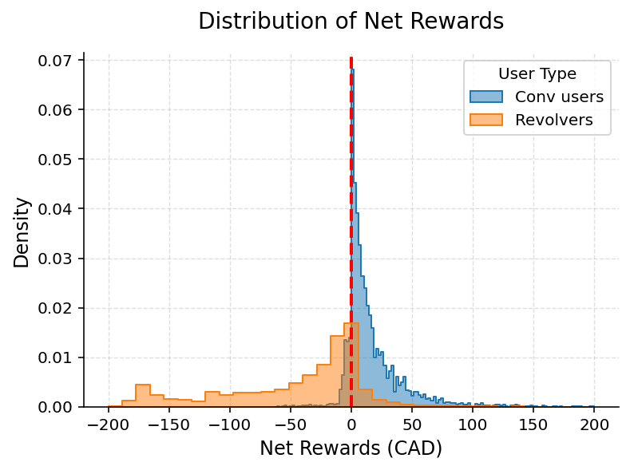
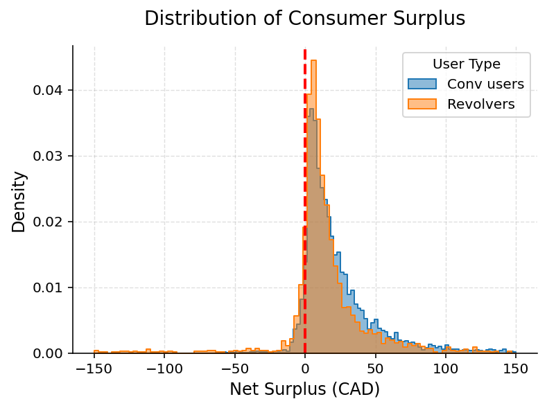

Chi Danh Dao (Dan)
Welcome. I am a PhD candidate in Economics at Queen's University.
My current research examines household financial decisions, consumer credit, and the distributional consequences of financial products.
Current research
Job market paper: Rewards, Credit Access, and Inequality in the Credit Card Market
This paper examines the distributional consequences of credit cards by accounting for their dual role as payment instruments and sources of unsecured credit, a dimension overlooked by studies that measure welfare using rewards net of interest charges and fees. Using microdata from the Bank of Canada’s Digital Wallet and Payment Trends Survey and a structural model of consumer payment choice, I show that ignoring the value of credit access overstates the Gini coefficient of welfare gains from credit cards by 44%, while requiring cardholders to repay balances in full increases the Gini coefficient by 7%. These findings imply that access to revolving credit has progressive distributional effects and challenge the view of credit card debt as inherently exploitative.

